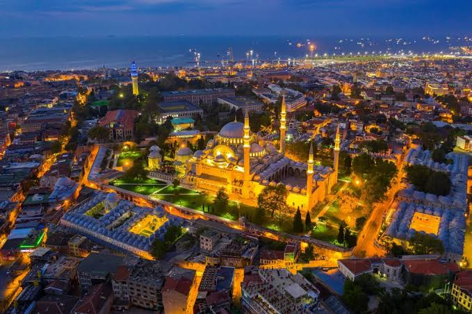

เหตุการณ์สำคัญ ค.ศ. 700–1000 ยุครุ่งเรืองของเมืองท่าสิราฟ เมืองท่าสิราฟกลายเป็นศูนย์กลางการค้าสำคัญที่สุดแห่งหนึ่งในอ่าวเปอร์เซีย เชื่อมการค้าระหว่างอิหร่าน อินเดีย จีน และโลกอาหรับ พ่อค้าจากหลายภูมิภาคมารวมตัวกันที่นี่ ทำให้เมืองมีความมั่งคั่งอย่างมาก ค.ศ. 1507 โปรตุเกสยึดฮอร์มุซ โปรตุเกสเข้าควบคุมเส้นทางเดินเรือบริเวณช่องแคบฮอร์มุซ ทำให้การค้าระหว่างอินเดียและอิหร่านเปลี่ยนแปลงไปอย่างมาก และเป็นจุดเริ่มต้นของอิทธิพลยุโรปในมหาสมุทรอินเดีย การแลกเปลี่ยนวัฒนธรรม อินเดียได้รับอะไรจากอิหร่าน ภาษาและคำศัพท์เปอร์เซีย ภาษาเปอร์เซียกลายเป็นภาษาสำคัญในการค้าและการปกครองในหลายพื้นที่ของอินเดีย คำศัพท์เปอร์เซียจำนวนมากเข้าสู่ภาษาอินเดียหลายภาษา ต่อมามีส่วนในการพัฒนาภาษาอูรดู ศิลปะและสถาปัตยกรรม รูปแบบซุ้มโค้ง การตกแต่งลวดลายเรขาคณิต สวนแบบเปอร์เซีย การออกแบบพระราชวังและอาคารสำคัญ อาหาร วิธีปรุงเนื้อสัตว์ การใช้ผลไม้แห้ง เช่น อัลมอนด์ พิสตาชิโอ น้ำกุหลาบและเครื่องเทศบางชนิดจากเปอร์เซีย ม้าพันธุ์ดี อินเดียนำเข้าม้าจากเปอร์เซียและอาหรับ ส่งผลต่อกองทัพและการสงครามของอินเดียหลายยุค ความรู้ด้านการเดินเรือ ชาวเปอร์เซียมีประสบการณ์เดินเรือในมหาสมุทรอินเดีย มีการแลกเปลี่ยนความรู้เรื่องลมมรสุม เส้นทางเดินเรือ และการนำทาง

ซิราฟ(Siraf) หรือปัจจุบันเรียกว่า Bandar Siraf เป็นเมืองท่าโบราณสำคัญบนชายฝั่งอ่าวเปอร์เซียทางตอนใต้ของ Iran และเคยเป็นหนึ่งในศูนย์กลางการค้าทางทะเลที่มั่งคั่งที่สุดแห่งหนึ่งของโลกอิสลามยุคกลาง ความสำคัญทางประวัติศาสตร์ ซิราฟรุ่งเรืองตั้งแต่ยุค Sasanian Empire จนถึงราวคริสต์ศตวรรษที่ 10–11 เป็นจุดเชื่อมการค้าระหว่างจีน อินเดีย เอเชียตะวันออกเฉียงใต้ แอฟริกาตะวันออก และตะวันออกกลาง นักโบราณคดีพบหลักฐานสินค้าจากแอฟริกาตะวันออก อินเดีย และเอเชียกลาง แสดงให้เห็นเครือข่ายการค้าระดับโลกในยุคนั้น